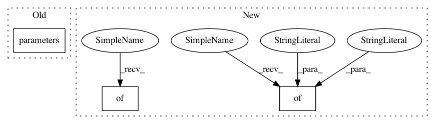

0a7220ed201eee2ad463264a72d5ce42c33dbcc1,trainval_net.py,,,#,113
Before Change
if args.optimizer == "adam":
lr = lr * 0.1
optimizer = torch.optim.Adam([
{"params": fasterRCNN.RCNN_base.RCNN_base_model[0].parameters(), "lr": lr * 0.0},
{"params": fasterRCNN.RCNN_base.RCNN_base_model[1].parameters(), "lr": lr * 0.1},
{"params": fasterRCNN.RCNN_base.RCNN_base_model[2].parameters()},
{"params": fasterRCNN.RCNN_base.RCNN_rpn.parameters()},
After Change
print("\t\t\tfg/bg=(%d/%d)" % (0, 0))
print("\t\t\trpn_cls: %.4f, rpn_box: %.4f, rcnn_cls: %.4f, rcnn_box %.4f" % (0, 0, 0, 0))
if args.use_tfboard:
info = {
"loss": loss_temp / args.disp_interval
}
for tag, value in info.items():
logger.scalar_summary(tag, value, step)
else:
print("[session %d][epoch %2d][iter %4d] loss: %.4f, lr4ft: %.2e, lr4tr: %.2e" \
% (args.session, epoch, step, loss_temp / args.disp_interval, lr * 0.1, lr))
print("\t\t\tfg/bg=(%d/%d)" % (fasterRCNN.fg_cnt, fasterRCNN.bg_cnt))
print("\t\t\trpn_cls: %.4f, rpn_box: %.4f, rcnn_cls: %.4f, rcnn_box: %.4f" %
(fasterRCNN.RCNN_base.RCNN_rpn.rpn_loss_cls.data[0], \
fasterRCNN.RCNN_base.RCNN_rpn.rpn_loss_box.data[0], \
fasterRCNN.RCNN_loss_cls.data[0], \
fasterRCNN.RCNN_loss_bbox.data[0]))
if args.use_tfboard:
info = {
"loss": loss_temp / args.disp_interval,
"loss_rpn_cls": fasterRCNN.RCNN_base.RCNN_rpn.rpn_loss_cls.data[0],
"loss_rpn_box": fasterRCNN.RCNN_base.RCNN_rpn.rpn_loss_box.data[0],
"loss_rcnn_cls": fasterRCNN.RCNN_loss_cls.data[0],
"loss_rcnn_box": fasterRCNN.RCNN_loss_bbox.data[0]
}
for tag, value in info.items():
logger.scalar_summary(tag, value, step)
loss_temp = 0
In pattern: SUPERPATTERN
Frequency: 3
Non-data size: 3
Instances
Project Name: jwyang/faster-rcnn.pytorch
Commit Name: 0a7220ed201eee2ad463264a72d5ce42c33dbcc1
Time: 2017-08-25
Author: jw2.yang@gmail.com
File Name: trainval_net.py
Class Name:
Method Name:
Project Name: ClementPinard/FlowNetPytorch
Commit Name: 8a06bafea1c17f05f0bf4b02f690115905e433df
Time: 2017-11-24
Author: clement.pinard@parrot.com
File Name: main.py
Class Name:
Method Name: main
Project Name: cornellius-gp/gpytorch
Commit Name: c63cc933782e2de32c9fe74c18b337b2bbe0f242
Time: 2018-07-19
Author: jrg365@cornell.edu
File Name: test/examples/test_kissgp_variational_regression.py
Class Name: TestKissGPVariationalRegression
Method Name: test_kissgp_gp_mean_abs_error
Project Name: jwyang/faster-rcnn.pytorch
Commit Name: 0a7220ed201eee2ad463264a72d5ce42c33dbcc1
Time: 2017-08-25
Author: jw2.yang@gmail.com
File Name: trainval_net.py
Class Name:
Method Name: